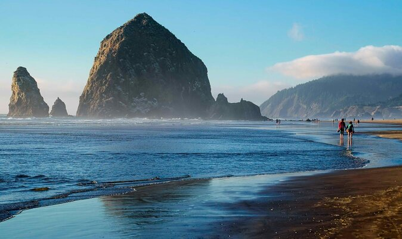

Cannon Beach
Situated along Oregon’s scenic coastline, Cannon Beach is one of the most picturesque destinations in the Pacific Northwest. Famous for its iconic Haystack Rock, this charming seaside town offers stunning ocean views, vibrant art galleries, and relaxing beachside vibes.
Features of Cannon Beach
- Haystack Rock: A massive monolith rising from the ocean, home to seabirds and tidal pools teeming with marine life.
- Ecola State Park: A nearby park offering breathtaking hiking trails and panoramic views of the Oregon coastline.
- Quaint Town Atmosphere: Cannon Beach’s downtown features unique shops, art galleries, and cozy cafes.
Wildlife and Ecology
Cannon Beach and the surrounding areas are rich with wildlife. Visitors can spot puffins nesting on Haystack Rock during spring and summer or watch gray whales migrating offshore. The tide pools around the rock are home to starfish, anemones, and crabs, providing a glimpse into the coastal marine ecosystem.
Best Times to Visit
While Cannon Beach is a year-round destination, the best times to visit are late spring through early fall. Summers provide mild temperatures and sunny days, perfect for beach activities. Fall brings fewer crowds and beautiful sunsets, while winter offers storm-watching opportunities for those seeking a dramatic coastal experience.
Plan Your Visit
Cannon Beach is easily accessible via Highway 101 and is about 90 minutes from Portland, Oregon. The town offers a variety of accommodations, from luxury resorts to charming cottages. Whether you’re strolling along the sandy shores, exploring tide pools, or enjoying local cuisine, Cannon Beach promises an unforgettable coastal retreat.